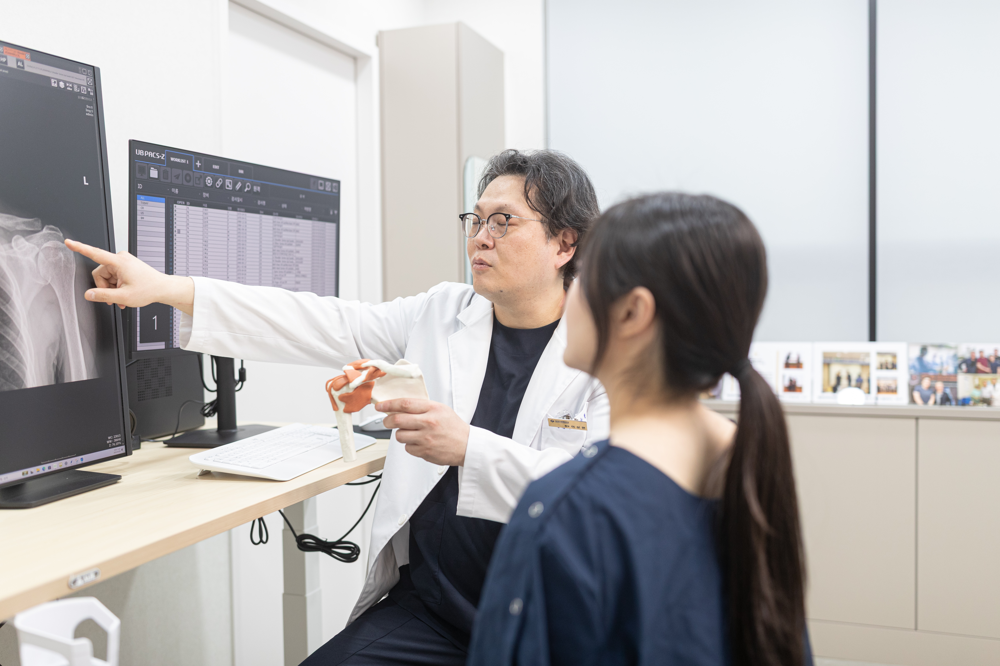
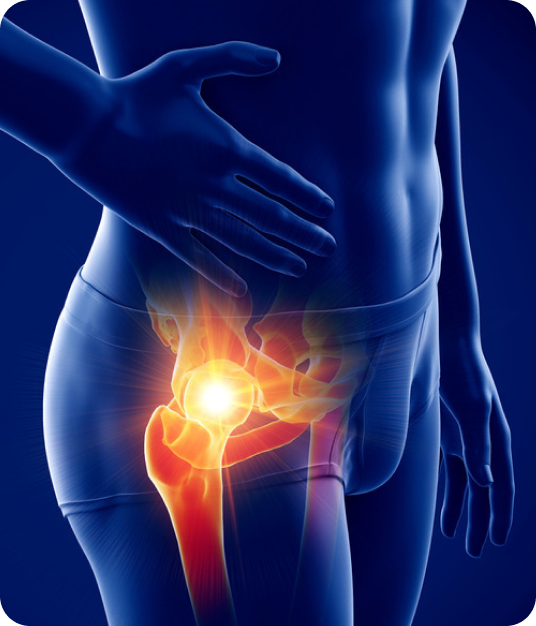
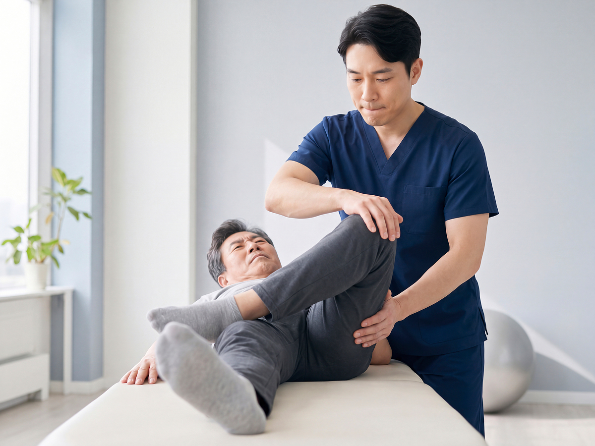
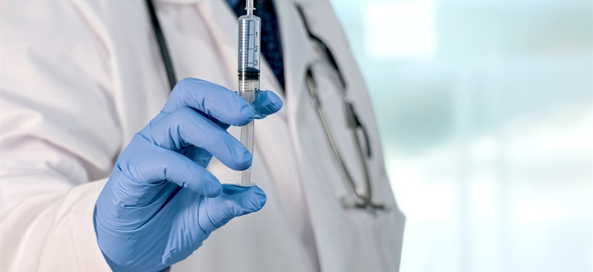

통증·부하 관리
필요에 따라 약물과 보행 보조기구로 통증과 고관절의 부담을 줄입니다.
대퇴골두로 가는 혈액 공급이 부족해 뼈 조직이 손상되는 질환으로
진행 단계와 골두의 함몰 여부에 따라 치료가 달라집니다.
대퇴골두는 골반과 맞물리는 허벅지뼈의 둥근 머리 부분입니다. 혈액 공급이 원활하지 않으면 뼈 조직이 손상되고,
진행하면서 골두가 주저앉아 관절염으로 이어질 수 있습니다. 초기에는 증상이 뚜렷하지 않아 영상검사로 확인하기도 합니다.

사타구니나 엉덩이에 깊은 통증이 생기고
진행하면 체중을 싣거나 걷기가 어려워질 수 있습니다.

약물과 부하 조절은 통증 관리에 도움이 될 수 있으며
진행 단계에 따라 관절 보존술이나 인공관절 수술을 평가합니다.
필요에 따라 약물과 보행 보조기구로 통증과 고관절의 부담을 줄입니다.

골두 함몰 전에는 범위와 단계에 따라 관절을 보존할 방법을 검토합니다.

골두 함몰과 관절 손상이 진행되면 인공관절 수술의 필요성을 평가합니다.
초기에는 증상이 뚜렷하지 않아도 진행할 수 있어, 의심되거나 진단받았다면 평가와 추적 계획이 중요합니다. 통증 정도만으로 진행 상태를 판단하지 마세요.
초기 변화는 일반 엑스레이에서 보이지 않을 수 있습니다. 증상과 위험 요인 등을 고려해 의료진이 MRI 등 추가 검사 필요성을 판단합니다.
병기와 괴사 범위, 대퇴골두의 함몰 여부 등에 따라 치료가 달라집니다. 관절 보존 가능성과 수술 필요성을 상태에 맞게 상담해야 합니다.